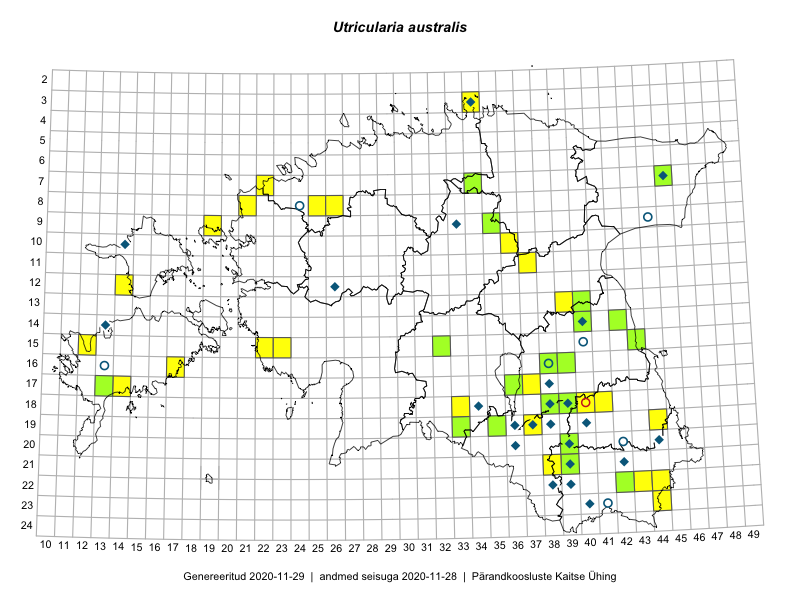

Utricularia australis
Uuendatud: 2016-12-02
Kaardile koondatud taksonid: Utricularia australis R.Br.

Kaart põhineb 9 kirjel, neist vaatlusi 8 ja eksemplare 1. Taksonit on leitud 8 ruudust.
Viited andmebaasikirjetele
- Kadi Palmik, Helle Mäemets: 2015-07-24: 14-42: ala
- Kadi Palmik, Helle Mäemets: 2015-07-22: 16-39: ala
- Kadi Palmik, Helle Mäemets: 2015-07-21: 09-35: ala
- Kadi Palmik, Helle Mäemets: 2015-08-13: 18-41: ala
- Kadi Palmik, Helle Mäemets: 2015-07-21: 10-36: ala
- Jana-Maria Habicht, Ester Valdvee: 2015-07-20: 07-34: ala
- Toomas Kukk, Liina Oja: 2016-07-21: 15-32: ala
- Tiit Hallikma, Tõnu Ploompuu: 2016-07-07: 08-21: ala
- Jana-Maria Habicht: 2015-07-20: 07-34: GPS punkt